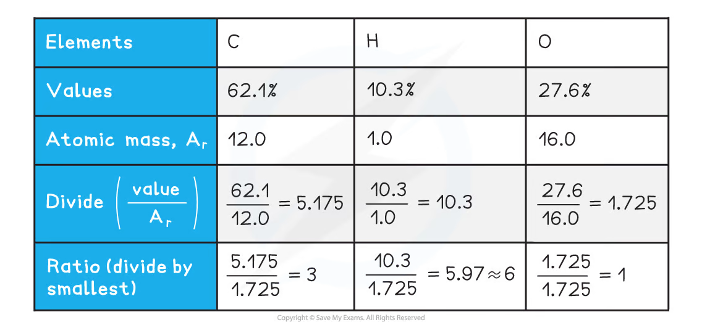
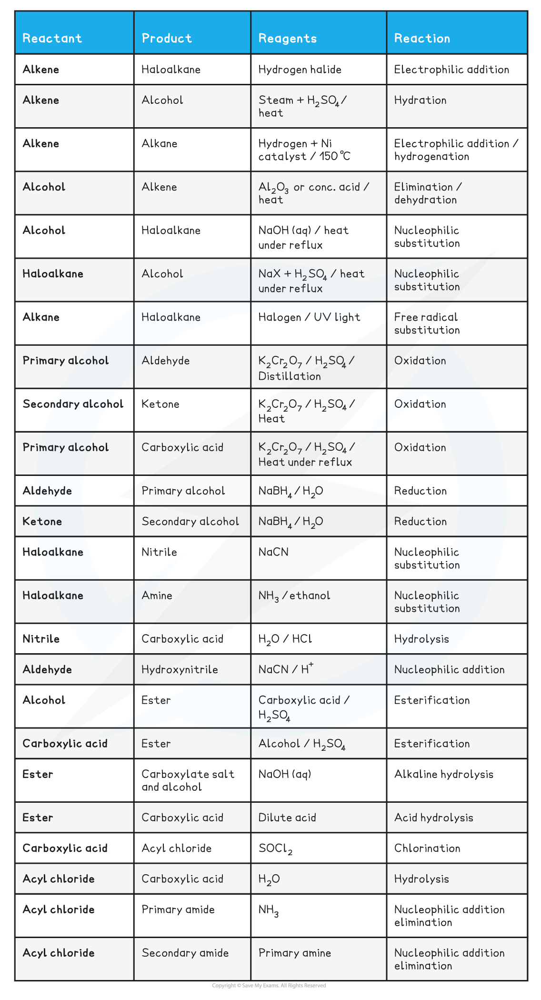
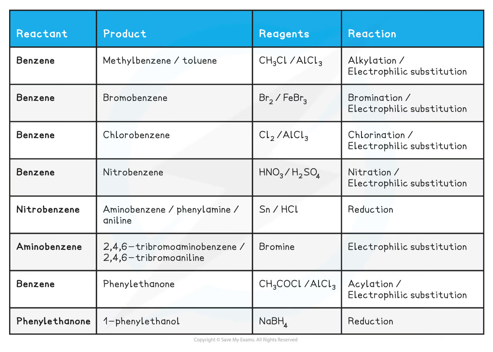
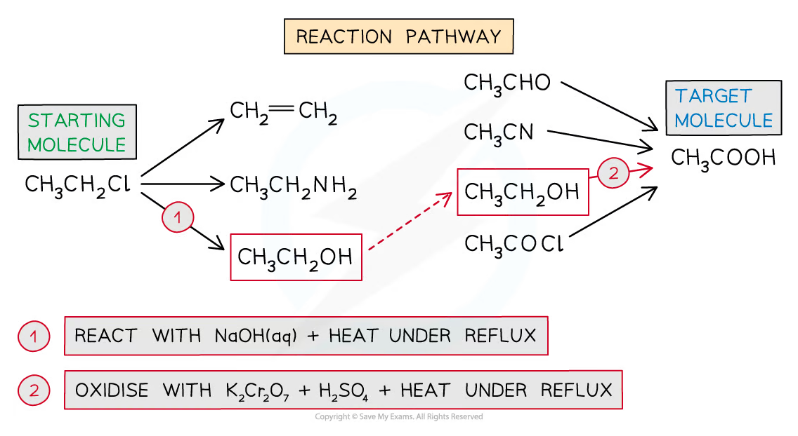
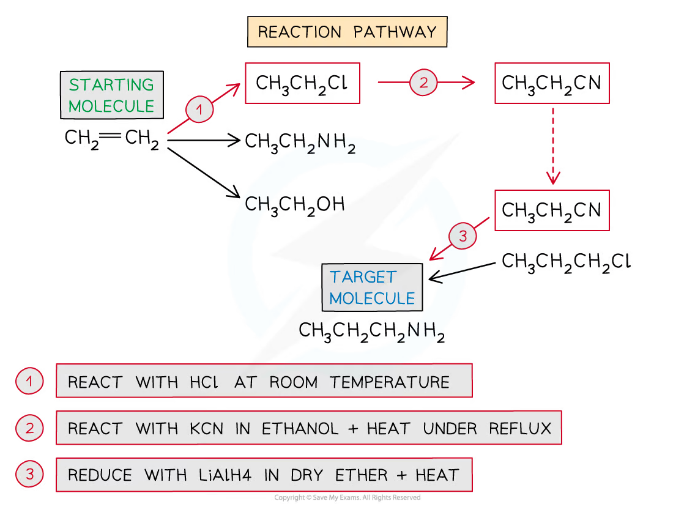
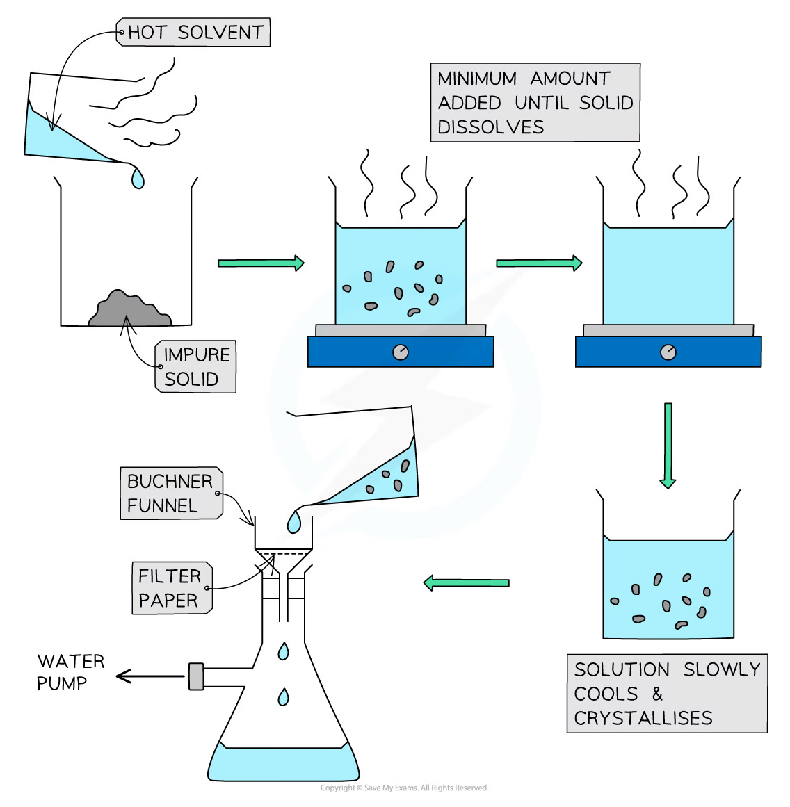

5.6 Organic Synthesis · Topic 20
Structure deduction, reaction pathways, Grignard reagents and practical techniques
5.6 Organic Synthesis · Topic 20
本页严格按 Pearson Edexcel International Advanced Level Chemistry specification 的 Topic 20: Organic Synthesis（20.1–20.5） 编排，主要依据项目内的 5.6 Organic Synthesis.pdf.pdf。解释采用中文，专业词汇保留 English，便于和 reaction schemes、spectra、practical procedures 及 exam wording 对照。
Learning objectives
学完本章后，你应该能够：
- deduce empirical、molecular 和 structural formulae from combustion、percentage、functional-group 和 spectral data；
- plan reaction schemes of up to four steps，并选择合适 reagents、conditions 和 practical controls；
- use magnesium to form Grignard reagents，extend carbon chains with carbon dioxide and carbonyl compounds；
- predict properties of unfamiliar organic compounds using known functional groups；
- prepare aspirin in Core Practical 16；
- explain reflux、washing、solvent extraction、recrystallisation、drying、distillation、steam distillation、melting-point 和 boiling-point techniques。
20.1 Deducing organic structures
Combined analytical workflow
未知 organic compound 的 structure deduction 可按以下顺序：
- 用 combustion analysis / elemental percentage composition 求 empirical formula；
- 用 accurate \(M_r\) 求 molecular formula；
- 用 functional-group tests、IR、MS 和 NMR 确定 functional groups / carbon skeleton；
- 组合 evidence，提出并验证 structural formula。
Useful data sources：
- combustion analysis；
- percentage composition；
- characteristic reactions：bromine、dichromate(VI)、Fehling’s / Tollens’、2,4-DNPH、carbonate、iodoform；
- IR spectroscopy；
- mass spectrometry；
- \(^{13}\mathrm{C}\) and \(^1\mathrm{H}\) NMR spectroscopy。
Combustion analysis and empirical formula
From carbon dioxide and water
Unknown compound 完全燃烧时，sample 中的 C 进入 \(\ce{CO2}\)，H 进入 \(\ce{H2O}\)。对只含 C、H、O 的 compound：
\[ m(\ce{C})=\frac{12.0}{44.0}\times m(\ce{CO2}) \]
\[ m(\ce{H})=\frac{2.0}{18.0}\times m(\ce{H2O}) \]
然后：
- calculate percentage C and H；
- percentage O \(=100-\%\ce{C}-\%\ce{H}\)；
- divide each percentage by \(A_r\)；
- divide all values by smallest；
- multiply to obtain whole-number ratio。

Worked example · combustion analysis
一份 \(2.90\ \mathrm{g}\) carbohydrate 完全燃烧，生成 \(6.60\ \mathrm{g}\) \(\ce{CO2}\) 和 \(2.70\ \mathrm{g}\) \(\ce{H2O}\)。
Step 1：mass and percentage of carbon
\[ m(\ce{C})=\frac{12.0}{44.0}\times6.60=1.80\ \mathrm{g} \]
\[ \%\ce{C}=\frac{1.80}{2.90}\times100=62.1\% \]
Step 2：mass and percentage of hydrogen
\[ m(\ce{H})=\frac{2.0}{18.0}\times2.70=0.30\ \mathrm{g} \]
\[ \%\ce{H}=\frac{0.30}{2.90}\times100=10.3\% \]
Step 3：oxygen and ratio
\[ \%\ce{O}=100-62.1-10.3=27.6\% \]
Divide by \(12.0\)、\(1.0\)、\(16.0\)，ratio 约为 \(3:6:1\)，所以 empirical formula 是 \(\ce{C3H6O}\)。
Molecular formula
Empirical formula 只表示 simplest whole-number ratio。先 calculate empirical-formula mass \(M_{r,\mathrm{emp}}\)，再用：
\[ n=\frac{M_{r,\mathrm{molecular}}}{M_{r,\mathrm{emp}}} \]
把 empirical formula 的 subscripts 全部乘以 \(n\)。例如 empirical formula \(\ce{C3H6O}\) 的 mass = 58；若 accurate molecular mass = 116，则 molecular formula = \(\ce{C6H12O2}\)。
Functional-group and spectral evidence
Quick identification guide
| Evidence / test | Functional-group information |
|---|---|
| bromine water decolourises | alkene \(\ce{C=C}\) |
| acidified dichromate(VI) changes orange \(→\) green | oxidisable primary / secondary alcohol or aldehyde |
| Fehling’s / Tollens’ positive | aldehyde |
| 2,4-DNPH orange precipitate | carbonyl group in aldehyde / ketone |
| sodium carbonate effervescence | carboxylic acid，\(\ce{CO2}\) produced |
| iodoform yellow precipitate | methyl ketone / suitable \(\ce{RCH(OH)CH3}\) group |
| IR | characteristic bond absorptions |
| MS | molecular ion and fragments |
| \(^{13}\mathrm{C}\) NMR | carbon environments |
| \(^1\mathrm{H}\) NMR | proton environments、integration、splitting |
任何单一 test 通常只提供 partial evidence；structure deduction 要把 different data sources combine。
20.3 Planning reaction schemes
Functional-group interconversion map
Planning synthesis 时，先画 starting molecule 和 target molecule，再比较 carbon number 和 functional groups。常见 routes：
| Starting material | Product | Typical reagent / condition | Reaction type |
|---|---|---|---|
| alkene | haloalkane | hydrogen halide | electrophilic addition |
| alkene | alcohol | steam, acid catalyst, heat | hydration |
| alkene | alkane | \(\ce{H2}\) / Ni, heat | hydrogenation |
| alcohol | alkene | \(\ce{Al2O3}\) or conc. acid, heat | elimination / dehydration |
| alcohol | haloalkane | halide reagent + acid, heat | substitution |
| haloalkane | alcohol | aqueous \(\ce{NaOH}\), reflux | substitution |
| haloalkane | nitrile | ethanolic \(\ce{KCN}\), reflux | substitution |
| nitrile | primary amine | \(\ce{LiAlH4}\) / dry ether or \(\ce{H2}\) / Ni | reduction |
| nitrile | carboxylic acid | dilute acid, heat | hydrolysis |
| primary alcohol | aldehyde | acidified \(\ce{K2Cr2O7}\), distil | oxidation |
| primary alcohol | carboxylic acid | acidified dichromate, reflux | oxidation |
| carbonyl | alcohol | \(\ce{NaBH4}\) / water | reduction |
| carboxylic acid | ester | alcohol / acid catalyst | esterification |
| ester | carboxylate + alcohol | aqueous \(\ce{NaOH}\), reflux | alkaline hydrolysis |
| carboxylic acid | acyl chloride | \(\ce{SOCl2}\) or \(\ce{PCl5}\) | chlorination |
| acyl chloride | amide | ammonia / amine | addition-elimination |
要注意 reagent、temperature、solvent、reflux / distillation 和 purification 的 exact wording。


Designing a pathway
建议使用 backward planning：
- 从 target molecule 往回找可行 precursor；
- 若 target 比 starting material 多一个 carbon，考虑 nitrile route 或 Grignard route；
- 每一步写 reagent、condition 和 reaction type；
- 检查是否超过 four steps，是否有 incompatible functional groups；
- 加入 separation / purification 和 hazard controls。
Example：chloroethane \(→\) ethanoic acid：
\[ \ce{CH3CH2Cl ->[aq. NaOH][reflux] CH3CH2OH ->[K2Cr2O7/H2SO4][reflux] CH3COOH} \]
Example：ethene \(→\) 1-aminopropane：
\[ \ce{CH2=CH2 ->[HCl] CH3CH2Cl ->[KCN/ethanol][reflux] CH3CH2CN ->[LiAlH4][dry\ ether] CH3CH2CH2NH2} \]


Properties and safety of unfamiliar compounds
预测 unfamiliar compound properties 时，把 structure 与 known functional-group behaviour 连接：
- more hydrogen bonding \(→\) higher boiling temperature / water solubility；
- longer hydrocarbon chain \(→\) stronger London forces but usually lower water solubility；
- ionic / zwitterionic species \(→\) high melting temperature and water solubility；
- aromatic delocalisation \(→\) electrophilic substitution preference；
- carbonyl / carboxyl / amine groups \(→\) characteristic acid-base / redox / nucleophilic reactions。
Hazard control 要基于 data：volatile / flammable liquids 使用 no naked flame；corrosive acid / alkali 使用 goggles、gloves 和 fume hood；toxic / irritant compounds 限制 exposure；pressure、vacuum 和 hot glassware 需要 additional controls。
20.2 Increasing carbon-chain length: Grignard reagents
Preparation and reactivity
Halogenoalkane 在 dry ether 中与 magnesium 反应，形成 Grignard reagent：
\[ \ce{R-X + Mg ->[dry\ ether] R-MgX} \]
Grignard reagent 中的 R group 可看作具有 carbanion-like character，因而是 strong nucleophile / base。Reaction mixture 必须保持 dry，因为 water 会 protonate and destroy the reagent：
\[ \ce{R-MgX + H2O -> RH + Mg(OH)X} \]
Carbonyl / carbon dioxide reaction 通常先形成 magnesium salt，随后加入 dilute acid hydrolysis / protonation，得到 organic product。
Grignard reactions with carbonyl compounds
Methanal \(→\) primary alcohol
\[ \ce{R-MgX + HCHO ->[dry\ ether] RCH2OMgX ->[H3O+] RCH2OH} \]
Aldehyde \(→\) secondary alcohol
\[ \ce{R-MgX + R'CHO ->[dry\ ether] R'CH(OMgX)R ->[H3O+] R'CH(OH)R} \]
Ketone \(→\) tertiary alcohol
\[ \ce{R-MgX + R'2CO ->[dry\ ether] R'2C(OMgX)R ->[H3O+] R'2C(OH)R} \]
例如 ethylmagnesium iodide 与 propanone 反应，acid work-up 后形成 2-methylbutan-2-ol。Mechanism detail 不要求，但 product class 和 dry ether / acid work-up 必须准确。
Grignard reaction with carbon dioxide
Grignard reagent 与 carbon dioxide 反应，在 work-up 后形成 carboxylic acid，并使 carbon chain 增加 one carbon：
\[ \ce{R-MgX + CO2 -> RCOO-MgX ->[H3O+] RCOOH} \]
例如：
\[ \ce{CH3CH2MgI + CO2 -> CH3CH2COOH} \]
产品是 propanoic acid，starting ethyl group 的 carbon chain 增加了 carbon dioxide 的 one carbon。
20.4 Core Practical 16: preparation of aspirin
Aspirin synthesis
Aspirin 是 2-ethanoyloxybenzoic acid / acetylsalicylic acid，可由 salicylic acid 的 phenolic \(\ce{-OH}\) 与 ethanoic anhydride 发生 ethanoylation / esterification 制备：
\[ \ce{C6H4(OH)COOH + (CH3CO)2O -> C6H4(OCOCH3)COOH + CH3COOH} \]
Typical practical sequence：
- weigh salicylic acid；
- add ethanoic anhydride 和 phosphoric acid catalyst；
- warm in a water bath，stir to complete reaction；
- add cold water to hydrolyse excess ethanoic anhydride and precipitate aspirin；
- cool in ice，vacuum filter crystals；
- wash with a small amount of cold water；
- recrystallise，dry and determine melting temperature；
- calculate percentage yield and compare melting range with data-book value。
Safety：ethanoic anhydride is corrosive / lachrymatory，acid catalyst is corrosive，hot water bath 和 vacuum filtration require eye protection and controlled handling。
20.5 Preparation techniques
Simple distillation
Separating a low-boiling product
Simple distillation 用 boiling-temperature difference 分离 liquid product。适用于 reaction 不完全或 product 与 reactants / solvent mixture 共存的情况。
以 primary alcohol oxidation 为例：aldehyde 的 boiling point lower than alcohol，因此边形成边 distil off，减少进一步 oxidation：
\[ \ce{CH3CH2OH + [O] -> CH3CHO + H2O} \]
要点：anti-bumping granules、thermometer bulb 位于 vapour path、condenser water enters from bottom、controlled heating、在 target boiling point \(\pm2\ ^\circ\mathrm{C}\) 范围收集 fraction。

Reflux
Heating without losing volatile substances
Heating under reflux 让 reaction mixture 在 boiling temperature 长时间加热，vapour 在 vertical condenser 中 condense 回 flask，因此 reactants、products 和 solvent 不会大量 loss。
适用 examples：primary alcohol 完全 oxidise 为 carboxylic acid、esterification、hydrolysis。与 distillation 的目的相反：
- distillation：separate and collect volatile product；
- reflux：keep all components in reaction flask，allow reaction to proceed more completely。
使用 heating mantle / water bath，不要对 flammable organic liquids 直接使用 naked Bunsen flame。

Steam distillation
Separating an immiscible liquid
Steam distillation 用 steam 带出 an organic liquid that is immiscible with water。Organic liquid 与 water vapour 一起 distil at a temperature below its normal boiling point，减少 thermal decomposition。Distillate 常 cloudy，随后用 separating funnel separate layers。
20.5 Purification techniques
Washing, solvent extraction and separating funnel
Reaction mixture 常含 water、acid / alkali 和 organic product。用 water 或 aqueous sodium carbonate solution washing 可以 remove soluble impurities / neutralise acid。
Separating-funnel procedure：
- transfer mixture into funnel，fit stopper；
- invert and gently shake，frequently open stopcock to release pressure；
- allow immiscible layers to separate；
- identify layer by density or small water-addition test；
- drain lower layer through stopcock，keep correct organic layer；
- repeat wash if needed。
Sodium carbonate + acid 可能 produce \(\ce{CO2}\)，所以必须 vent frequently and open stopcock slowly。

Drying an organic liquid
Drying agents 是 anhydrous inorganic salts，会吸收 organic layer 中 traces of water：
- anhydrous calcium chloride：常用于 hydrocarbons；
- anhydrous calcium / magnesium sulfate：general-purpose drying agents。
Add small portions and swirl：若 drying agent clumps，仍有 water；继续加入直到部分 fine powder remains free-flowing。Dry liquid 应 clear，然后 decant or filter off drying agent。
Recrystallisation
Recrystallisation 用于 purify an impure solid：
- choose solvent in which product soluble when hot but only slightly soluble when cold；
- use minimum hot solvent to dissolve solid；
- hot-filter insoluble impurities if necessary；
- allow solution to cool slowly，pure crystals form；
- cool further in ice，vacuum-filter with Buchner funnel；
- wash crystals with small amount of cold solvent，dry。
Slow cooling gives larger, better-defined crystals；repeating recrystallisation increases purity but decreases percentage yield。

20.5 Purity and identity
Melting temperature
Melting temperature 可用于 identify solid 和 assess purity：
- pure solid：sharp, narrow melting range，接近 data-book value；
- impure solid：lower melting temperature and broader melting range。
Practical technique：sample finely powdered and completely dry，pack into capillary，heat slowly，record temperature when melting begins and when fully liquid。Report as a range，而不是 single value；至少 repeat measurements。


Boiling temperature
Liquid 的 boiling temperature 通过 distillation 确定，并与 literature / database value 比较：
- pure liquid 通常在 narrow temperature 附近 boil；
- impurities 可能使 apparent boiling temperature higher，或造成 broad boiling range；
- distillation fraction 的 thermometer reading 应在 vapour pass into condenser 的位置测量。
Integrated synthesis strategy
Four-step planning checklist
面对 synthesis question：
- draw starting structure and target structure；
- compare carbon count，找出是否需要 nitrile / Grignard chain extension；
- identify one functional-group change per step；
- choose reagent、solvent、temperature、catalyst and work-up；
- keep within four steps；
- include purification and hazard controls；
- check all structures、charges、carbon count、oxidation direction 和 product class。
Synthesis answer 的每一步都应有 reactant \(→\) product + reagent / condition + reaction type，不要只写 reagent list。
Exam checklist
Source note
本页面对应：Note per Chapter/Note per Chapter/5.6 Organic Synthesis.pdf.pdf；考纲范围对应 International-A-Level-Chemistry-Spec 的 Topic 20: Organic Synthesis（20.1–20.5）。页面中的示意图均从本章 note 独立提取并保存到 assets/notes/synthesis/，便于单独放大和复用。